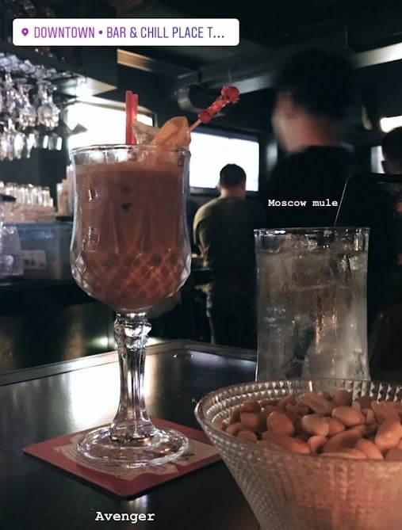

Awesome Friends
With Nina and Nick at Victoria harbor
Terrific weather, isn't it?
With Nina and Nick at Victoria peak
If there's one destination on every Hong Kong itinerary, it's likely Victoria Peak.
With Nina,Nick and Allen at Mong Kok MTR
Wonderful STM reunion in Hong Kong !
On Temple street
What were we doing ?
Why did we take this photo ?
On Graham Street
A photo shot by a passerby.

With Keira on Knutsford Terrace
A good place for drinking!
At Stanley(赤柱)
Wonderful scenery!
With Candy and Dennis in Tai Kwun
The architecture is quite special there.
With Jimmy on Sharp Island(橋咀島)
His skin color is really dark , amazing!
With Yvonne on Rua do Cunha(澳門官也街)
How young were we !